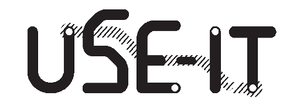
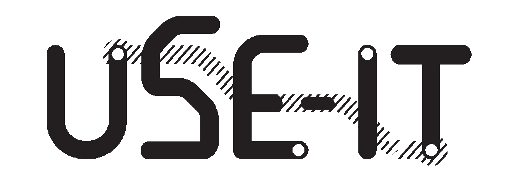

Welcome to the Prague Treasure Hunt mini-game
Caution! this game is in ALPHA state, meaning very basic, under development and may contain bugs
Step 1: allow use of your location
This game requires the use of your geolocation. Please allow your location to be used by clicking this button.
Step 2: How to play
Get within 10 meters of a marker on the map to activate it or catch it. The marker will turn green and the counter will advance by one in the top right corner to indicate your progress. Tap the marker to open a popup, read about the location and complete the task in the description.
The blue circle around the crosshair indicates the accuracy of your GPS signal.
Step 3: How to win
Collect all your answers and submit. The team with the most points (based on number of correct answers, amount of items collected and/or originality of the answers given), will win a small prize. Winners announced on (To Be Determined).


 
